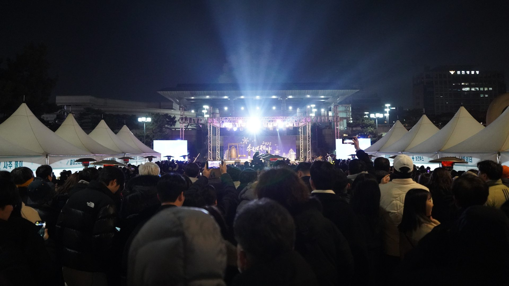
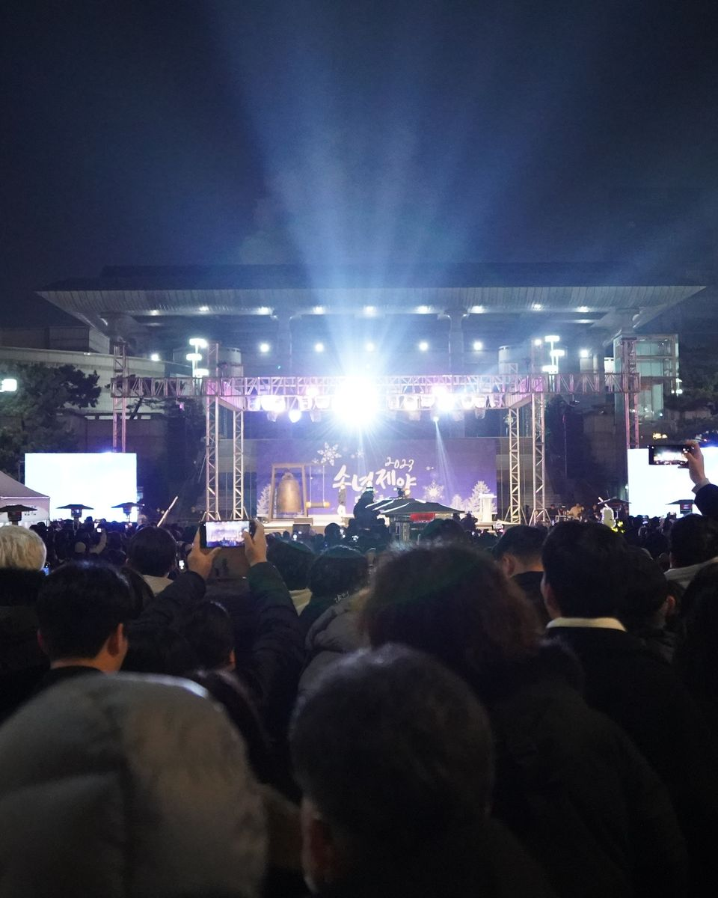
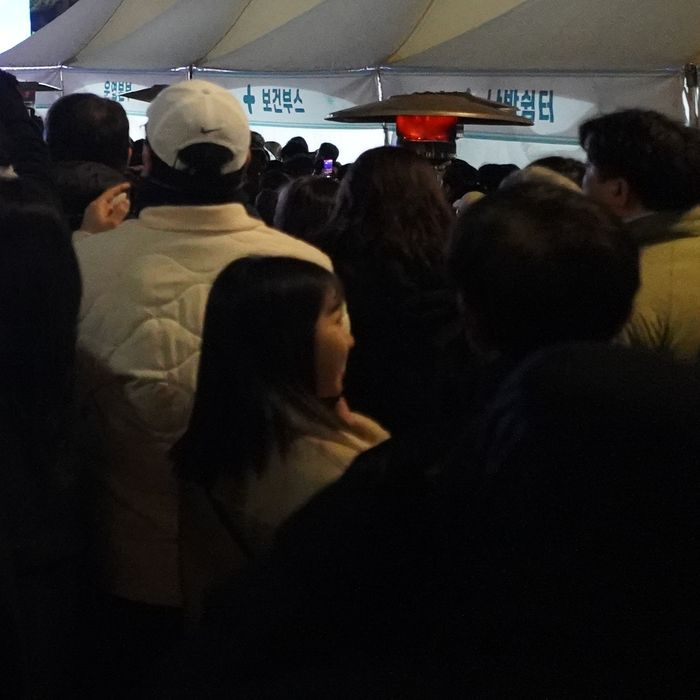

디지털 티케팅 혁신
아날로그 수기예매에서 실시간 디지털 시스템으로
2004년 설립 초기, 수기 전화 예매 위주였던 인천 지역 공연시장을 인터넷 실시간 좌석선택 방식으로 개편하여
관객 편의성을 극대화하고 티켓 발권 투명성을 확립했습니다.
인천 문화예술 디지털 티케팅 20년 선도
티켓예매 플랫폼 엔티켓을 기반으로
공연기획·행사대행·디자인·영상제작까지.
공연에 필요한 모든 것을 한 팀이 지원합니다.

Company Introduction
낙후된 아날로그식 공연 환경을 디지털 혁신으로 전환하며,
시민과 공연장을 잇는 든든한 가교가 되어왔습니다.
"2007년부터 인천문화예술회관 공식 예매처로서 전 공연 판매대행 및 서해구문화회관, 학생문화회관, 평생학습관 기획·발권을 성공적으로 총괄하고 있습니다."
디지털 티케팅 혁신
2004년 설립 초기, 수기 전화 예매 위주였던 인천 지역 공연시장을 인터넷 실시간 좌석선택 방식으로 개편하여
관객 편의성을 극대화하고 티켓 발권 투명성을 확립했습니다.
자체 및 합작 초대형 공연기획
윤종신 콘서트, FT아일랜드 콘서트(부천체육관), 박상민 콘서트(삼산월드체육관), 전국연극제, 인천영화제,
펜타포트 락 페스티벌 등 메가 이벤트의 공동기획·홍보와 좌석판매 노하우를 축적했습니다.
전문 하우스 어셔 & 현장인력
공연 운영이 미숙한 주최사를 위해 체계적인 CS/안전 교육을 이수한 전문 하우스 어셔와 검표·수표 인력을 현장 지원하여 격조 높은 공연 관람 환경을 조성합니다.
COMPREHENSIVE SERVICES
4대 핵심 역량을 통해 지자체 축제와
공연 프로젝트의 성공을 완벽히 보장합니다.
엔티켓 고유의 다채널 발권 연동.
(PC 웹, 모바일, 전용 콜센터, 현장 발권 부스)
대규모 시민문화축제부터 전문 공연예술제, 기업 문화행사까지 총괄 대행 및 주관.
인천 지역 15만 관객 데이터베이스를 직접 타깃팅하는 독점적 마케팅 파워.
13년차 전문 프로듀서와 음향·조명·영상 스태프진이 선사하는 무대 영상미.
SCENES FROM OUR WORK




END-TO-END WORKFLOW
공연의 목적과 일정에 맞춰, 필요한 과정을 함께 설계합니다.
공연 콘셉트 설정 및 포스터·리플렛·SNS 콘텐츠 제작
엔티켓 20만 회원 타깃팅 안내 및 실시간 예매 개시
13년차 전문 PD 및 최정상 음향·조명·영상 기술팀 투입
전문 교육 하우스 안내원 배치, 무인/유인 발권 부스 가동
투명한 티켓판매 정산 내역서 및 실적증명원 즉시 발급
SELECTED WORKS
VERIFIED PORTFOLIO
(주)엔엔터테인먼트는 철저한 현장 준비와 인천 최대의 관객 네트워킹을 바탕으로, 기획된 모든 공공문화행사와
대형 콘서트에서 단 한 건의 안전사고 없이 목표 좌석 점유율 100%를 초과 달성해왔습니다.
OUR HISTORY
공연·행사 기획 및 운영 주요 약력
CONTACT & PARTNERSHIP
티켓 예매부터 기획, 디자인, 영상까지.
필요한 분야와 공연·행사 계획을 알려주세요.